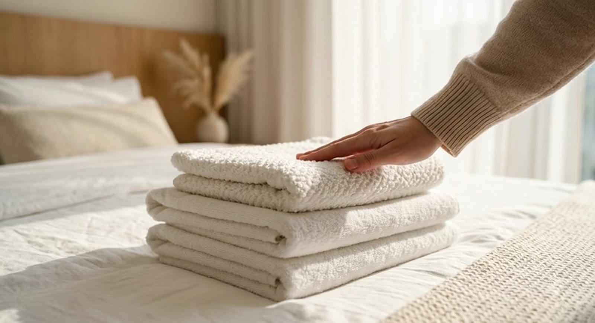
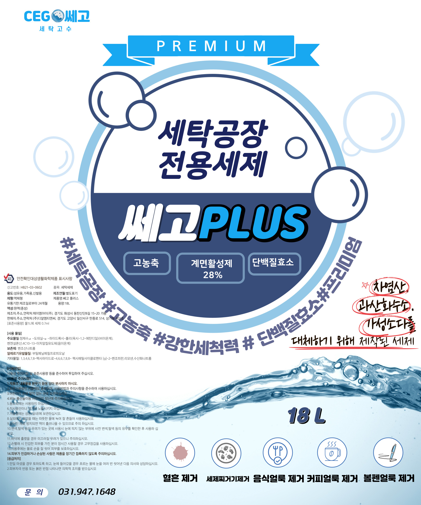
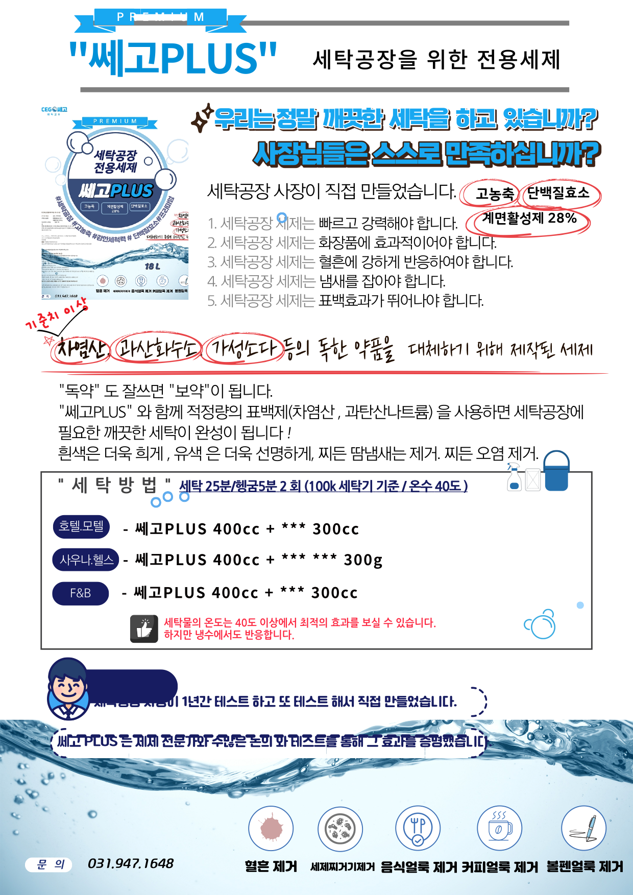

CEGO Premium Detergent
세탁공장 사장이 직접 만든
세탁공장 사장이 직접 만든
쎄고PLUS
차염산·가성소다를 대체하는 고농축 프리미엄 세탁세제. 세탁공장 전용 · 계면활성제 28% · 단백질효소 함유.

Product
쎄고PLUS Premium
쎄고PLUS Premium
세탁공장 전용세제
세탁공장 사장이 1년간 직접 테스트하고 세제 전문가와 함께 개발한 B2B 전용 세제입니다.
우리는 정말 깨끗한 세탁을 하고 있습니까?
사장님들은 스스로 만족하십니까?
- 제품명
- 쎄고PLUS (PREMIUM)
- 용량
- 18L
- 액성
- 완역(중성)
- 계면활성제
- 28%
- 적용 온도
- 40°C 이상 최적 (냉수도 가능)
- 용도
- 섬유용, 가죽용, 신발용
#세탁공장전용#고농축#계면활성제28%#단백질효소
5 Conditions
세탁공장 세제의 5가지 조건
쎄고PLUS는 세탁공장 현장에서 검증한 5가지 조건을 모두 충족합니다.
빠르고 강력한 세정
고농축 포뮬러로 짧은 세탁 시간에 강력한 세정력
화장품 얼룩 제거
파운데이션·립스틱 등 화장품 오염에 효과적
혈흔 강력 제거
단백질효소가 혈흔에 강하게 반응
냄새 차단
찌든 땀냄새, 퀴퀴한 냄새를 근본적으로 제거
뛰어난 표백 효과
흰색은 더욱 희게, 유색은 더욱 선명하게
Why CEGO PLUS
세탁공장 사장이
세탁공장 사장이
직접 만들었습니다
독한 약품(차염산, 과산화수소, 가성소다)을 대체하기 위해 만든 세제입니다. 세제 전문가와 수없이 테스트해 효과를 증명했습니다.
- 차염산·과산화수소·가성소다 등 위험 약품을 안전하게 대체
- 세탁공장 사장이 1년간 직접 테스트한 현장 검증 제품
- 적정량의 표백제와 함께 쓰면 최상의 세탁 결과
- 호텔·모텔·사우나·헬스·F&B 업종별 맞춤 사용법 제공

Stain Removal
5가지 얼룩, 쎄고PLUS 하나로
혈흔
단백질효소로 혈흔 분해
세제 찌꺼기
묵은 세제 잔여물 제거
음식 얼룩
기름·소스 등 음식 오염
커피 얼룩
커피·차 등 음료 얼룩
볼펜 얼룩
볼펜·잉크 얼룩
How to use
업종별 사용 방법
100kg 세탁기 기준 · 온수 40°C 이상 권장
| 업종 | 쎄고PLUS 사용량 | 세탁 시간 | 최적 온도 |
|---|---|---|---|
| 호텔 / 모텔 | 400cc | 세탁 25분 / 헹굼 5분 × 2회 | 40°C 이상 |
| 사우나 / 헬스장 | 400cc | 세탁 25분 / 헹굼 5분 × 2회 | 40°C 이상 |
| F&B / 식당 | 400cc | 세탁 25분 / 헹굼 5분 × 2회 | 40°C 이상 |
| 기숙사 / 연수원 | 400cc | 세탁 25분 / 헹굼 5분 × 2회 | 40°C 이상 |
세탁물 온도 40°C 이상에서 최적의 효과를 냅니다. 냉수에서도 반응합니다.
적정량의 표백제(차염산, 과탄산나트륨)와 함께 쓰면 최상의 결과를 얻습니다.
업종·오염도별 맞춤 사용법은 전화 상담으로 안내드립니다. 031-947-1648
쎄고PLUS 구매 문의
세탁공장 전용 프리미엄 세제, 지금 바로 상담하세요.